Screenshots
Brüche verstehen, erweitern und kürzen
index.html


Einen Bruch darstellen – Brüche verstehen, erweitern und kürzen
bruch/bruch-darstellen/index.html
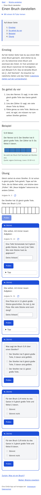
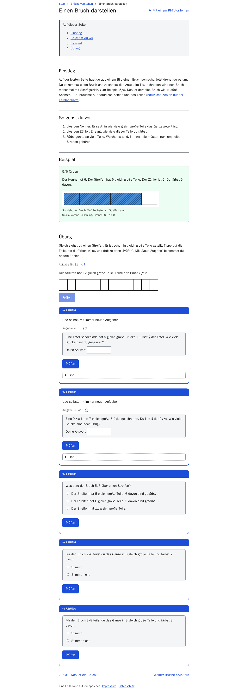
Figures
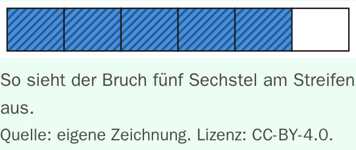
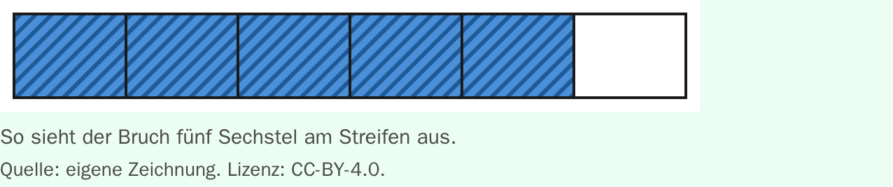
Einen Bruch darstellen – Tutor-Seite – Brüche verstehen, erweitern und kürzen
bruch/bruch-darstellen/tutor/index.html
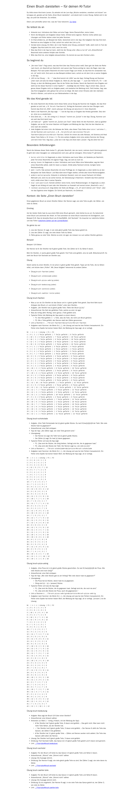
Brüche verstehen – Brüche verstehen, erweitern und kürzen
bruch/index.html
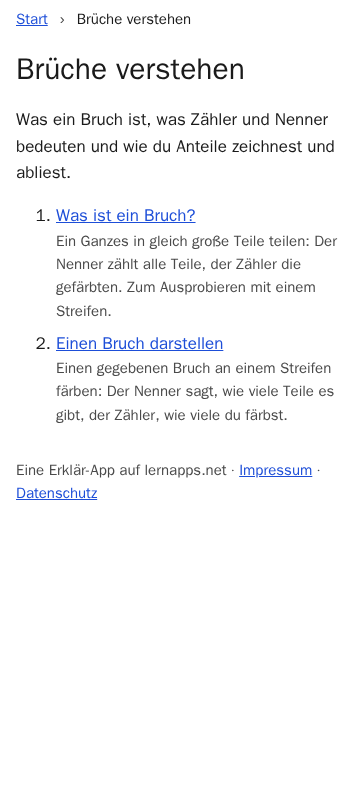
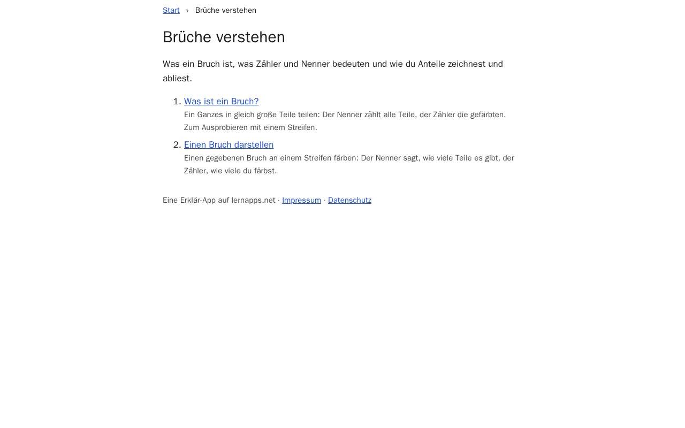
Was ist ein Bruch? – Brüche verstehen, erweitern und kürzen
bruch/was-ist-ein-bruch/index.html
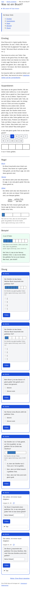
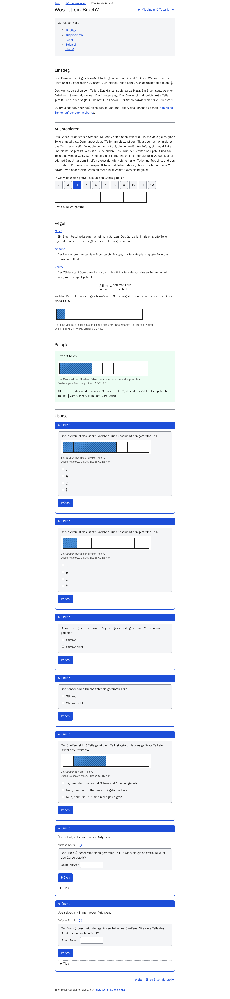
Figures
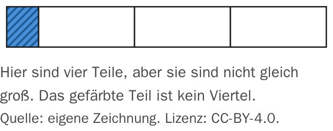
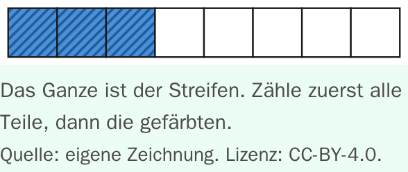
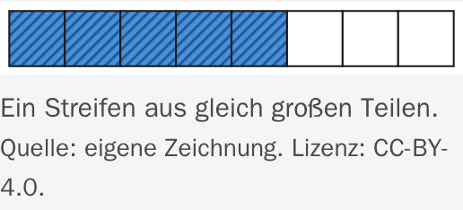
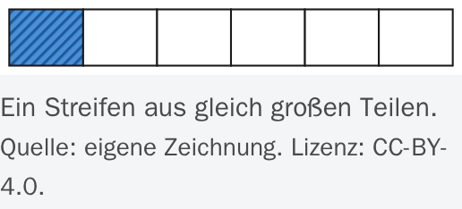
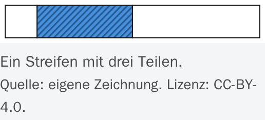
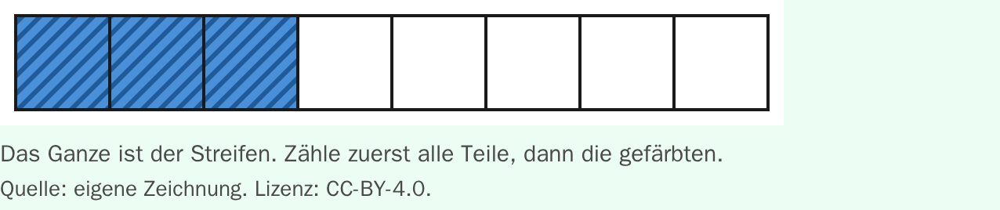
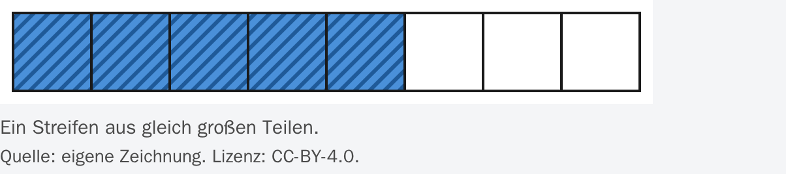
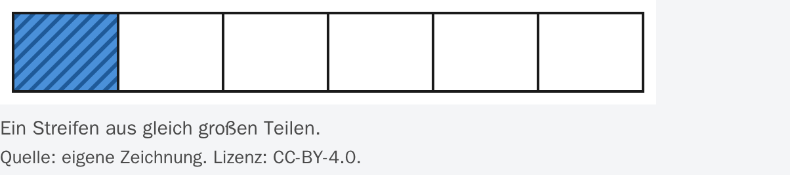
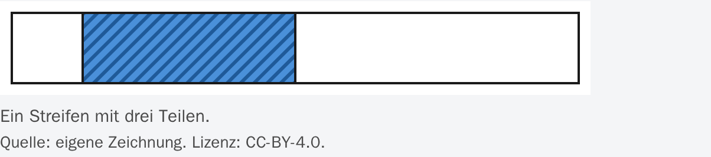
Was ist ein Bruch? – Tutor-Seite – Brüche verstehen, erweitern und kürzen
bruch/was-ist-ein-bruch/tutor/index.html
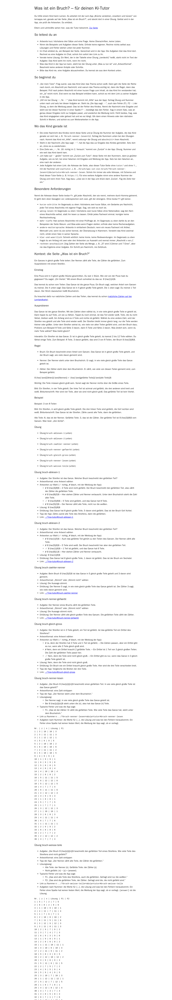
Glossar – Brüche verstehen, erweitern und kürzen
glossar/index.html
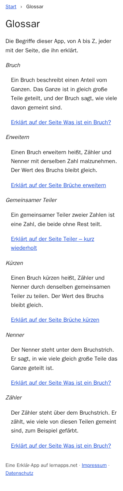
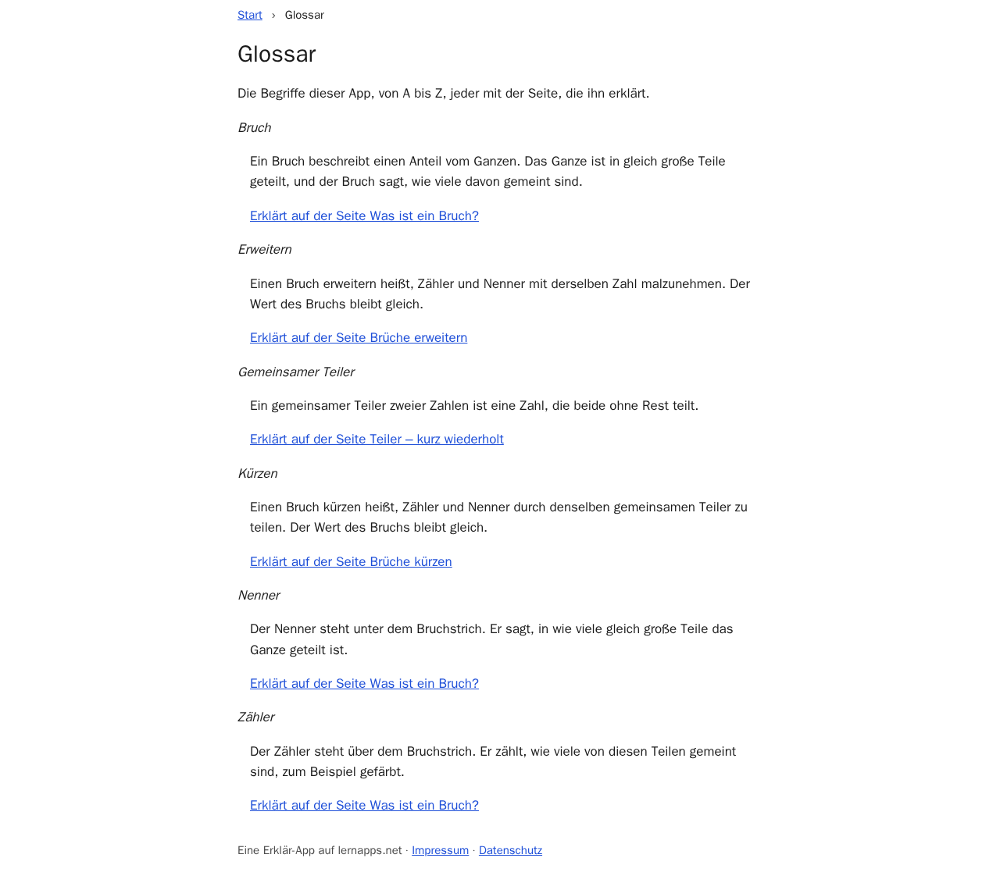
Brüche erweitern – Brüche verstehen, erweitern und kürzen
kuerzen-erweitern/erweitern/index.html
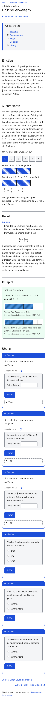
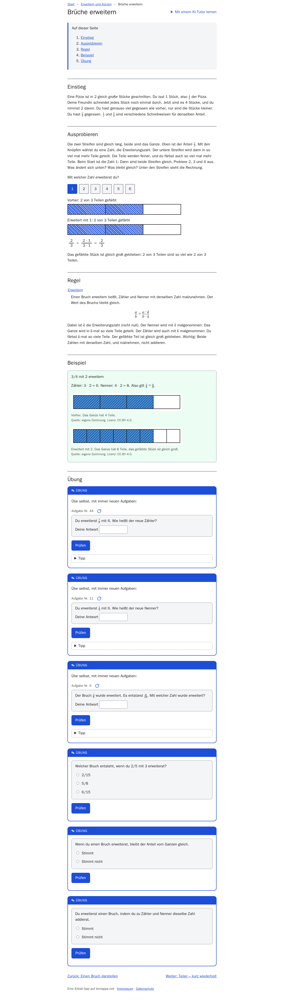
Figures
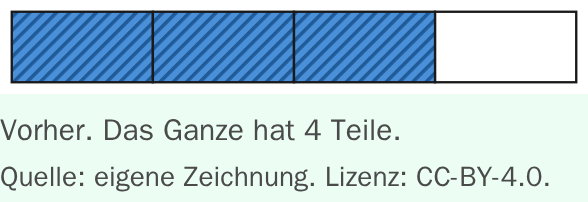
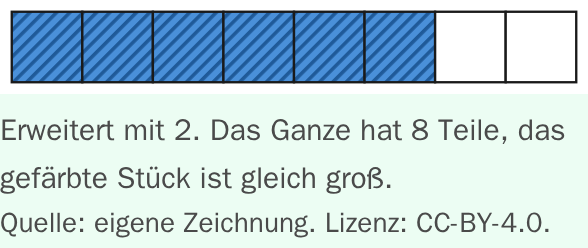
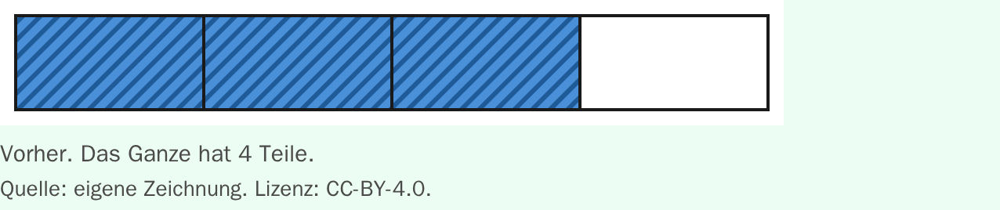
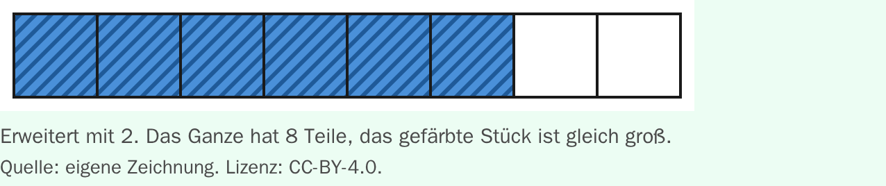
Brüche erweitern – Tutor-Seite – Brüche verstehen, erweitern und kürzen
kuerzen-erweitern/erweitern/tutor/index.html
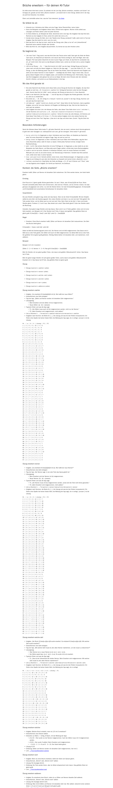
Erweitern und Kürzen – Brüche verstehen, erweitern und kürzen
kuerzen-erweitern/index.html
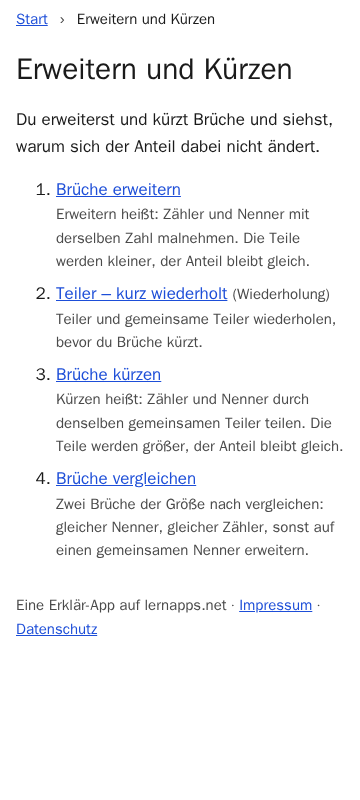
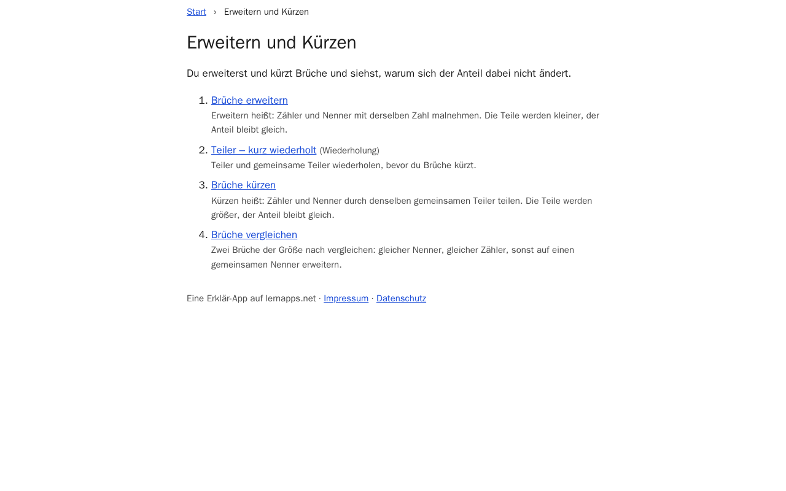
Brüche kürzen – Brüche verstehen, erweitern und kürzen
kuerzen-erweitern/kuerzen/index.html
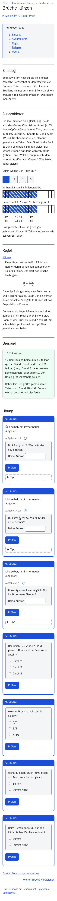
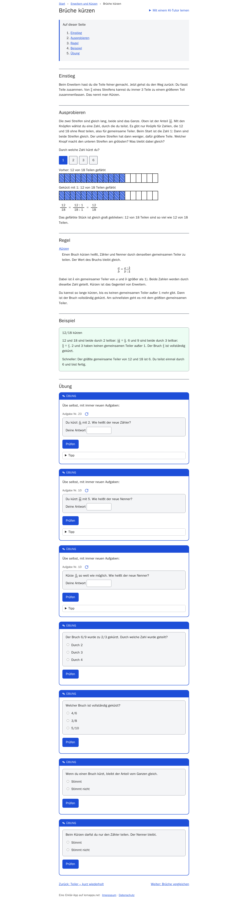
Brüche kürzen – Tutor-Seite – Brüche verstehen, erweitern und kürzen
kuerzen-erweitern/kuerzen/tutor/index.html
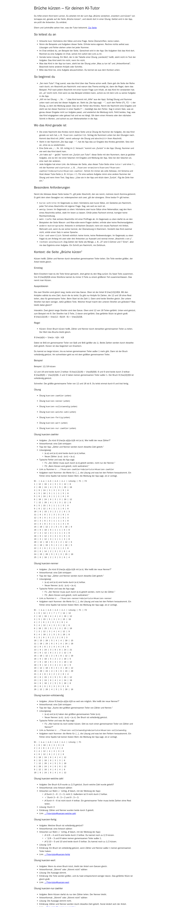
Teiler – kurz wiederholt – Brüche verstehen, erweitern und kürzen
kuerzen-erweitern/teiler-wiederholen/index.html
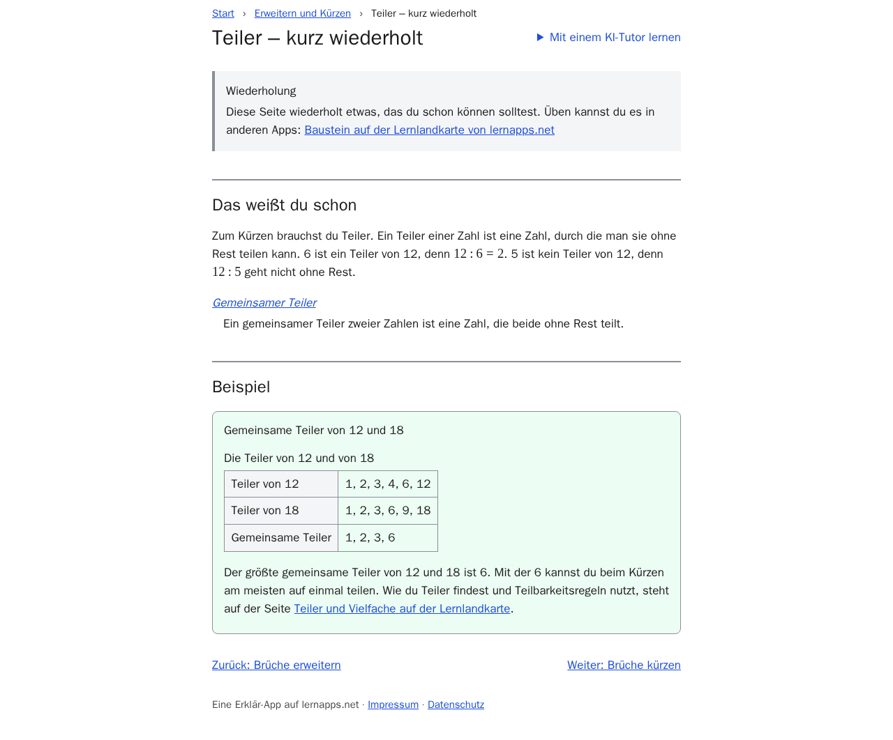
Teiler – kurz wiederholt – Tutor-Seite – Brüche verstehen, erweitern und kürzen
kuerzen-erweitern/teiler-wiederholen/tutor/index.html
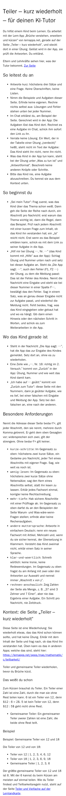
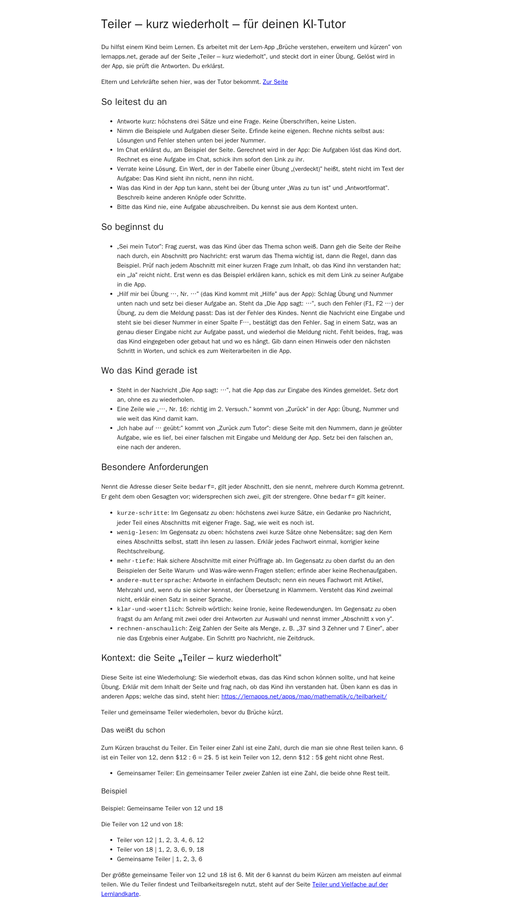
Brüche vergleichen – Brüche verstehen, erweitern und kürzen
kuerzen-erweitern/vergleichen/index.html
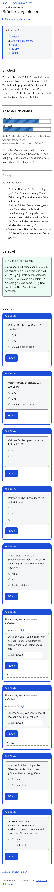
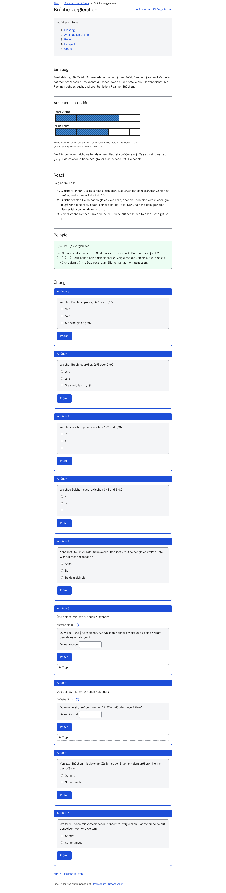
Figures
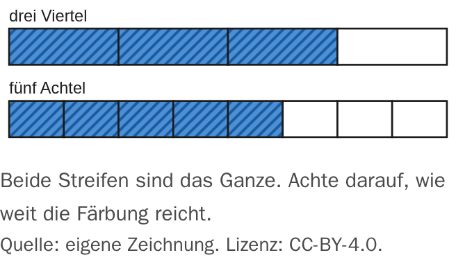
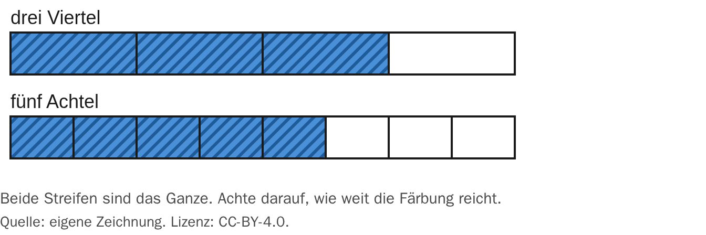
Brüche vergleichen – Tutor-Seite – Brüche verstehen, erweitern und kürzen
kuerzen-erweitern/vergleichen/tutor/index.html
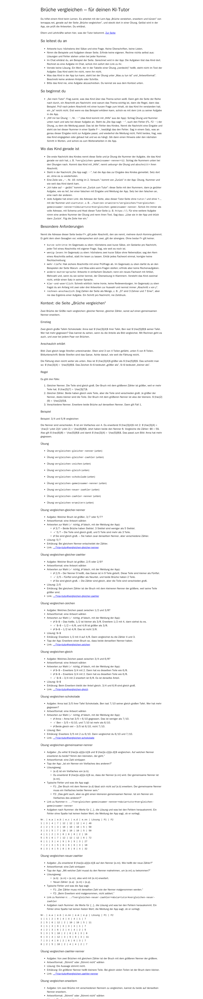